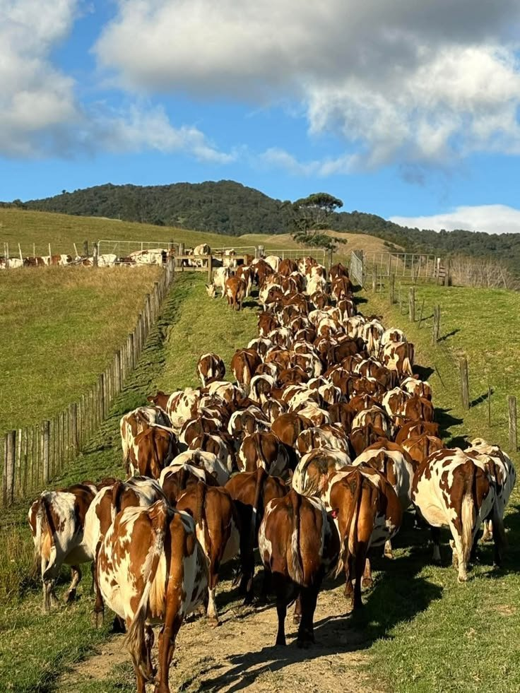
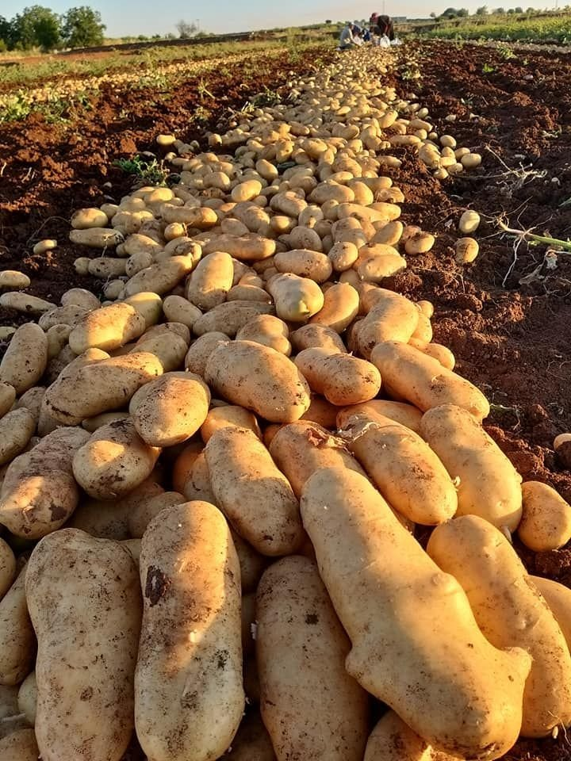

Livestock & Crops

Livestock
- Cattle: Nguni and Brahman breeds, chosen for their hardiness & resistance to pests and suitability to local conditions and good quality in meat
- Goats: raised for the local community and surrounding region as they hold big cultural importance to the Zulu traditions
- Chickens: traditional Zulu chickens (izinkukhu zesiZulu) alongside Olam'thuthu chickens.

Crops
- Corn
- Potatoes
- Tomatoes
- Other seasonal produce
Browse Our Stock
Search or filter what we raise and grow. Click a photo to see it larger, or make an enquiry.
Nothing matches your search. Try a different word or clear the filters.